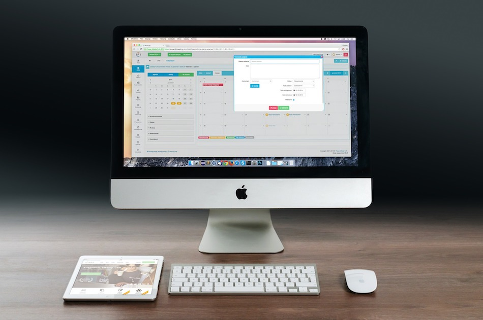

In the ATM program (Applied Technology Magnet), I have learned many things about using computers and the different programs that they have.
| 6th Grade | 7th Grade | 8th Grade |
|---|---|---|
| Typing | Photoshop and Illustrator | Coding in HTML and CSS |
| How to use our Google Drive | SketchUp | My Coded Blog |
| Word, Powerpoint, Excel | Photography | Filming Videos |
All in all, the ATM program taught me many things about computers and the programs on them. In my experience, it was great to be in the program because of what we learned and the teachers that helped us to learn. The content we were taught has in some way, been useful to me like being able to use Photoshop for making new profile pics or just making what ever comes to mind. The teachers, like Ms. Milton and Ms. McClure, were also great and I could tell that they really cared about what they do and who they are teaching and will help their students the best that they humanly can.
